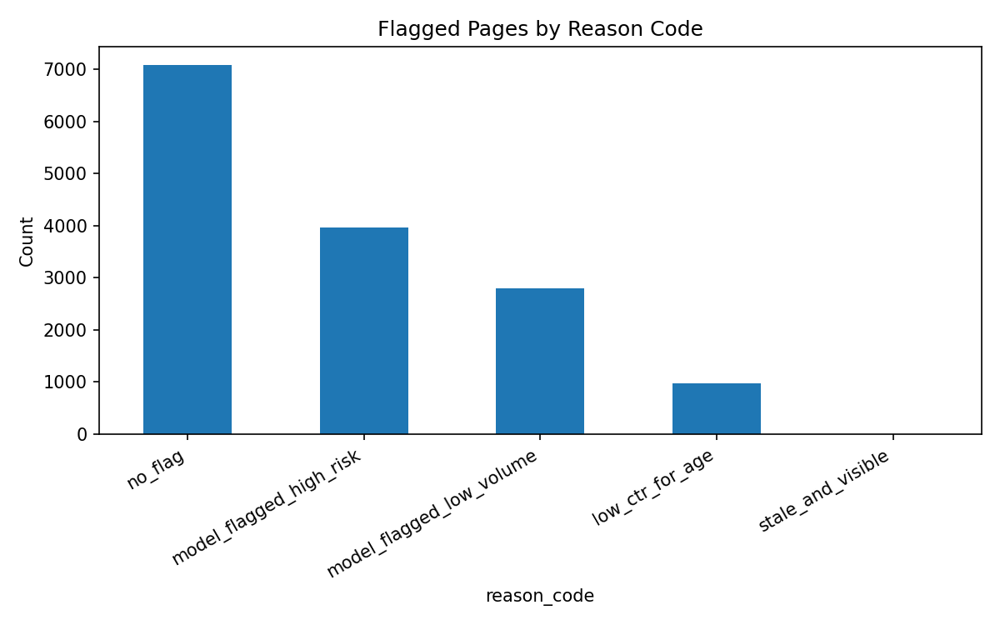

Content teams can only review a fraction of their pages each cycle, so the real question is not "is this page declining?" but "which pages should a reviewer look at first?" Using FlyRank's anonymized search-performance dataset (30,000 content pages, cross-checked against a 78.8-million-row production warehouse), I built a transparent hand-written baseline and a client-validated Random Forest ranking model. The model ranks pages at a Precision@50 of 0.56 against a baseline of 0.50 and a base decline rate of 0.526 — a real but modest improvement, and one that only holds up once client-level leakage is removed from the validation split. This paper is a decision-support tool for a human reviewer with limited time, not an automated content-editing system.
Picture a content editor with 500 pages under their care and time to review perhaps 50 of them this month. The obvious first instinct is to start with the oldest, most neglected pages — the assumption that staleness predicts decline feels almost too obvious to test. This paper tests it anyway, on real (anonymized) search performance data, and the obvious rule turns out to be wrong: in this portfolio, stale pages actually decline less often than fresh ones. That single reversal is the starting point for everything that follows — a simple rule, a model built to beat it honestly, and a ranked list an editor can actually act on.
This study uses the FlyRank ML Internship starter dataset
(content_refresh_anonymized.csv), a 30,000-row anonymized sample of content
performance across position, impressions, clicks, sessions, freshness, and content
metadata. Every finding in this paper was also spot-checked against the full production
release — flyrank_pseudonymized_warehouse_release_v20260703 —
hosted on Hugging Face, which contains 78,835,655 daily fact rows across roughly 70
clients. A verification query against one mid-panel month
(month=2026-03) confirmed 9,841,378 rows spanning the full month with no
duplicate (client, content, day) combinations, matching the expected grain of one row
per content item per client per day.
Excluded on purpose: product-computed decision flags such as
health_score, priority_score, and action_type are
not used anywhere in this analysis. Feeding a product's own existing decision into a
discovery model would only teach it to copy that decision, not find new signal. Raw
client names, domains, URLs, and query text were never available in this release —
all identifiers are pseudonymized hashes used only for joining and grouping.
The target, is_declining, is defined as trend_direction == "down"
— a same-window proxy computed from 30-day impression change, not a validated
future outcome. This is a known limitation, discussed further below.
Seven observable signals, all knowable before any review decision: 90-day impressions, 90-day sessions, content age, days since last update, click-through rate, average position, and word count. No product-computed flags or future-window data are included.
A transparent, hand-written rule: score = is_stale × is_visible ×
impressions_90d, where staleness is 180+ days since update and visibility is
500+ impressions in 90 days. Two signal checks were run before encoding this rule:
| Signal | Result | Verdict |
|---|---|---|
| Staleness (180+ days) | Stale pages decline 47.1% of the time vs. 54.3% for non-stale pages | OPPOSITE of the assumption |
| Low CTR at position | 59.3% decline rate vs. 58.3% for others — barely above the 54.2% base rate | MIXED — weak signal |
A Random Forest classifier (200 trees, max depth 6, class-balanced) trained on the seven observable features above, evaluated with predicted probability ranked at Precision@K — the fraction of the top-K ranked pages that are actually declining.
Pages from the same client can share hidden structural similarities that a naive random
split would let a model memorize rather than learn from. This study uses
client-holdout validation (grouped split by client_id):
whole clients are held out of training and only ever appear in the test set.
Following an explicit leakage audit, a deliberately redundant feature (a duplicate of the baseline rule) was added to the model to confirm the test harness would catch real leakage. It did not cause a score jump (Precision@50 stayed roughly flat, 0.560 to 0.540), which is expected since the feature was redundant with existing inputs rather than a genuine leak — and confirms the validation harness is sound.
The model beats the hand-written baseline at both evaluated cutoffs, and both beat the base rate of pages that are actually declining:
| Method | Precision@20 | Precision@50 |
|---|---|---|
| Baseline (hand rule) | 0.400 | 0.500 |
| Model (Random Forest, client split) | 0.550 | 0.560 |
| Base rate (always predict majority) | 0.526 | |
| Feature | Importance |
|---|---|
| impressions_90d | 0.427 |
| avg_position | 0.197 |
| content_age_days | 0.115 |
| word_count | 0.077 |
| ctr | 0.071 |
| sessions_90d | 0.062 |
| days_since_last_update | 0.052 |
Notably, days_since_last_update — the exact feature the baseline
rule was built around — ranks last in importance. The model relies primarily on
traffic volume and ranking position, which is consistent with the staleness signal
check above.

42.5% of test-set predictions were wrong at a 0.5 probability threshold — a reminder that this model is a ranking aid, not a reliable individual-page classifier. Reviewing specific wrong cases showed the model sometimes over-weights low CTR or low position as decline signals even when a page is not actually declining; one flagged example also carried a CTR value above 1.0, an impossible value that is almost certainly a data artifact rather than a real signal, and was treated as such.
is_declining is a same-window trend
bucket, not a validated future outcome. A stronger design would predict a future
30-day window from a strictly prior feature window.
The full ranked queue (22,301 pages, scored and reason-coded) is exported to
work/outputs/content_action_playbook.csv in the project repository. In
practice:
model_flagged_high_risk or model_flagged_low_volume reason
code and meaningful traffic, since these combine the model's strongest signal with an
explicit, readable reason.stale_and_visible and low_ctr_for_age pages are secondary
candidates — worth a look, but staleness alone should not be treated as evidence
of decline given the signal-check finding above.no_flag pages in the review queue should be deprioritized or reviewed
last, since the model offers no specific reason for them.All code, data contracts, and notebooks referenced in this paper are public in the project repository: github.com/Muneeb-th/ML-Assignment-1. Random seeds are fixed at 42 throughout for both the train/test split and the model itself. Key notebooks, in order:
work/notebooks/w01_research_question.ipynb — lane selectionwork/notebooks/w02_ml_task_framing.ipynb — task framingwork/notebooks/w03_data_contract.ipynb — data contract & warehouse verificationwork/notebooks/w04_baseline_score.ipynb — baseline rule & signal checkswork/notebooks/w05_model.ipynb — model training & baseline comparisonwork/notebooks/w06_validation_audit.ipynb — honest-split audit & leakage checkswork/notebooks/w07_action_playbook.ipynb — ranked queue, reason codes, exportsBuilt on the FlyRank ML Internship dataset, provided by FlyRank. All data used is anonymized and pseudonymized per FlyRank's internship data-use terms; no client names, domains, URLs, or raw query text appear anywhere in this study.